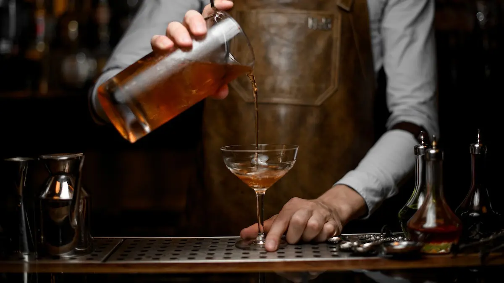

history of Cocktails
From as long as human history existed,humans have been drinking alcohol, and from since ,the've been mixing spirits with honey, seawater and spices. In the early 1860s the word cocktail has been introduced, by a bartender named Jerry Thomas who published his book The Bar Manual in 1862. Traditionally cocktails are made with the mixture of spirits, juices, sugar and bitters Scroll down to learn how to use the tools to make Classic Cocktails, like a professional bartender
